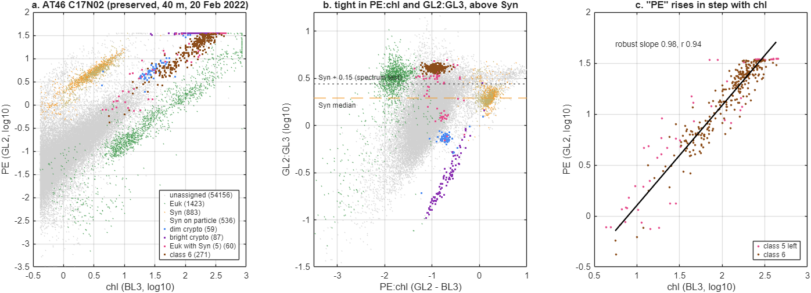
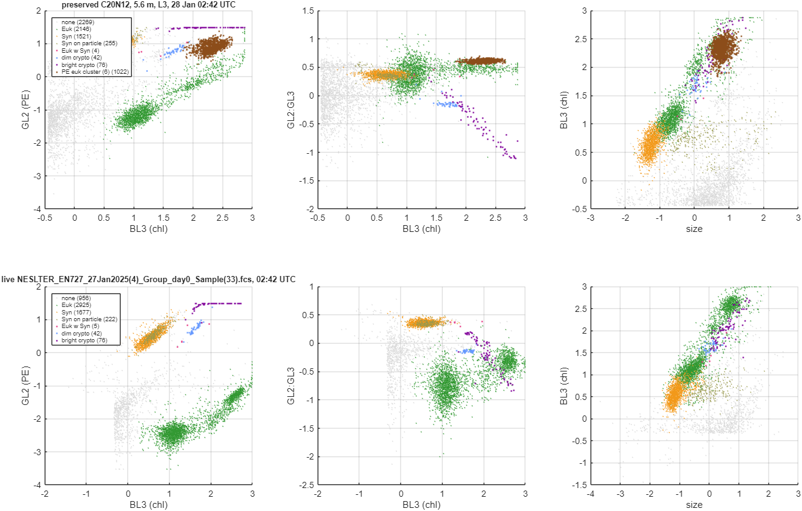
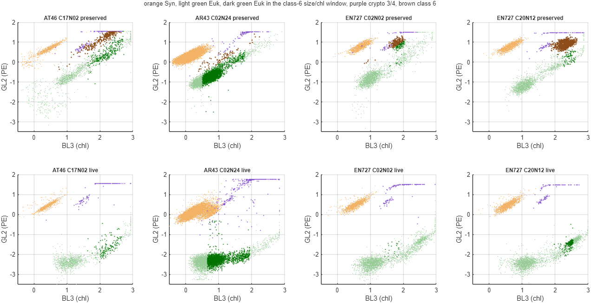
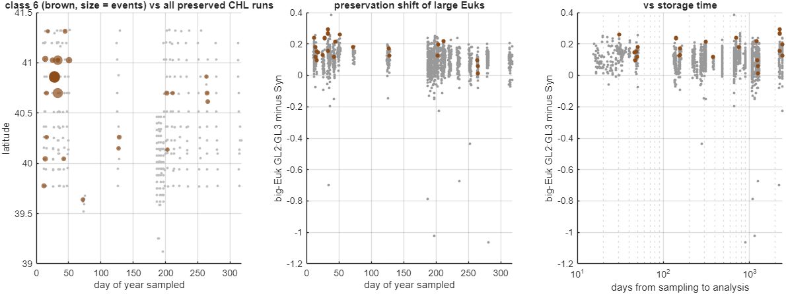

<title>Attune Class 6</title>
<meta name="claude:viewport-fit-sides" content="cover">
<link rel="stylesheet" href="https://fonts.googleapis.com/css2?family=IBM+Plex+Sans:wght@400;500;600&family=IBM+Plex+Mono:wght@400;500&family=Source+Serif+4:opsz,wght@8..60,600&display=swap">
<style>
/* Layout: one reading column of a technical note, figures allowed to run wider than the text */
:root {
  --bg: #fbfbf9; --fg: #1f2421; --muted: #5b625d; --rule: #dfe2dc; --panel: #f1f3ee;
  --accent: #8a4a1c; /* class-6 brown */
  --figbg: #ffffff;
  --display: "Source Serif 4", Georgia, serif;
  --body: "IBM Plex Sans", system-ui, -apple-system, "Segoe UI", sans-serif;
  --mono: "IBM Plex Mono", ui-monospace, Consolas, monospace;
}
@media (prefers-color-scheme: dark) { :root:not([data-theme="light"]) {
  --bg: #151816; --fg: #e4e7e2; --muted: #a2aaa4; --rule: #2e3430; --panel: #1d221f; --accent: #d9935e; --figbg: #ffffff; color-scheme: dark } }
:root[data-theme="dark"] {
  --bg: #151816; --fg: #e4e7e2; --muted: #a2aaa4; --rule: #2e3430; --panel: #1d221f; --accent: #d9935e; --figbg: #ffffff; color-scheme: dark }
body { background: var(--bg); color: var(--fg); font-family: var(--body); font-size: 16px; line-height: 1.6;
  padding-left: max(16px, env(safe-area-inset-left, 0px)); padding-right: max(16px, env(safe-area-inset-right, 0px)); padding-block: 40px 64px; }
main { max-width: 1120px; margin: 0 auto; display: grid; gap: 28px; }
.text { max-width: 70ch; }
header { display: grid; gap: 10px; border-bottom: 1px solid var(--rule); padding-bottom: 22px; }
.eyebrow { font-family: var(--mono); font-size: 12px; letter-spacing: .08em; text-transform: uppercase; color: var(--muted); }
h1 { font-family: var(--display); font-weight: 600; font-size: clamp(28px, 4vw, 40px); line-height: 1.15; margin: 0; text-wrap: balance; }
h2 { font-family: var(--display); font-weight: 600; font-size: 24px; margin: 8px 0 0; text-wrap: balance; }
h3 { font-size: 16px; font-weight: 600; margin: 0; }
p { margin: 0; }
section { display: grid; gap: 14px; }
.lede { font-size: 18px; color: var(--fg); }
.key { border-left: 3px solid var(--accent); background: var(--panel); padding: 14px 18px; display: grid; gap: 8px; max-width: 78ch; }
ol, ul { margin: 0; padding-left: 1.3em; display: grid; gap: 6px; }
code, .mono { font-family: var(--mono); font-size: .9em; }
figure { margin: 0; display: grid; gap: 8px; }
figure .img { background: var(--figbg); border: 1px solid var(--rule); border-radius: 4px; padding: 8px; overflow-x: auto; }
figure img { display: block; width: 100%; height: auto; min-width: 640px; }
figcaption { font-size: 14px; color: var(--muted); max-width: 90ch; }
figcaption b { color: var(--fg); }
.tbl { overflow-x: auto; }
table { border-collapse: collapse; font-size: 14px; font-variant-numeric: tabular-nums; min-width: 520px; }
th, td { text-align: left; padding: 6px 12px 6px 0; border-bottom: 1px solid var(--rule); vertical-align: top; }
th { font-weight: 600; color: var(--muted); font-size: 12px; letter-spacing: .04em; text-transform: uppercase; }
td.n { text-align: right; padding-right: 18px; }
.hl td { color: var(--accent); font-weight: 600; }
.foot { font-size: 13px; color: var(--muted); border-top: 1px solid var(--rule); padding-top: 16px; }
</style>

<main>
<header>
  <div class="eyebrow">NES-LTER Attune classifier v2 · preserved samples · Nov 2026</div>
  <h1>Class 6: a preservation shift in large Euks</h1>
  <p class="lede text">Class 6 was added as a "PE euk cluster": a compact group of cells with Syn-type PE that does not look like ingested Syn. Comparing each preserved sample with the live underway run taken at the same time shows that these cells are ordinary Euks. Preservation raises their fluorescence on the PE channels. Class 6 is now counted as Euk in all tables and scoring, and keeps its own code in the class files.</p>
</header>

<section>
  <div class="key">
    <h3>Summary</h3>
    <ul>
      <li>Class 6 fires only in preserved samples, in 31 of 2,086 CHL runs scanned. It never fires in live underway files.</li>
      <li>In all four cases with a live run close in time, the same cells (same size and chl) show no PE. Their GL2 is 1.5–2.3 log<sub>10</sub> units lower, and nothing sits where class 6 sits.</li>
      <li>Preservation lifts GL2 for the whole Euk population. Class 6 is the tight top of that shifted cloud.</li>
      <li>Occurrence peaks on the winter inner shelf: 10% of runs north of 40.8°N in Dec–Mar, against 0.4% of summer runs overall. It does not depend on storage time.</li>
    </ul>
  </div>
</section>

<section>
  <h2>How class 6 is determined</h2>
  <p class="text">Class 6 is decided per sample, after the PE-euk steps in <code>assign_class_v2</code>. The parameters are in <code>cfg.sig.peeuk_cluster</code> (<code>classifier_config.m</code>).</p>
  <ol class="text">
    <li><b>Start from class 5 (Euk with Syn).</b> These are PE-euk events above the spillover floor whose PE spectrum is Syn-like, not crypto-type. Only events with a usable BL2:GL3 spectrum count: BL2 and GL3 on scale and GL2 not saturated. At least 50 such events and 50 Syn are needed.</li>
    <li><b>Tight in PE:chl and GL2:GL3.</b> The robust SDs (1.4826 × MAD) are at most 0.18 for PE:chl and 0.06 for GL2:GL3. Ingested Syn would scatter much more, because each cell holds a Poisson number of Syn. For AT46 a simulation gives PE:chl SDs of 0.23–0.41.</li>
    <li><b>Members.</b> Members are the class-5 events within 3 robust SDs of the centre in both PE:chl and GL2:GL3.</li>
    <li><b>"PE" rises with chl.</b> Among the members, the robust slope of GL2 on BL3 is 0.7–1.3 and the correlation is at least 0.7.</li>
    <li><b>Spectrum above Syn.</b> The members' median GL2:GL3 is at least 0.15 above the sample's Syn median. Tightness and slope alone are not specific, because class 5 is often tight in preserved runs. The shared GL2:GL3 of about 0.55–0.61 is what marks this group.</li>
  </ol>
  <p class="text">If all checks pass, the members become class 6. In discrete samples, the <code>dimcrypto</code> rule in <code>assign_class_discrete</code> also sends a rejected Syn-like group to class 6 when the group's spectrum is not crypto-type. This matters in EN727 C20N02: before the change, 860 of the same cells had been called dim crypto.</p>
  <figure>
    <div class="img"></div>
    <figcaption><b>Figure 1. The rule on AT46 C17N02</b> (preserved, 40 m, 20 Feb 2022). (a) The 271 class-6 events (brown) sit between the bright cryptos and the Euks. (b) They are tight in PE:chl and GL2:GL3, and their GL2:GL3 is well above the Syn median (dashed) and the +0.15 threshold (dotted). (c) Their GL2 rises with BL3 (robust slope 0.98, r 0.94). The class-5 events left behind (pink) are scattered.</figcaption>
  </figure>
</section>

<section>
  <h2>What the cells are: preserved vs live</h2>
  <p class="text">The underway Attune samples the same water continuously, so a preserved Niskin sample can be compared with the live run taken closest in time. On the class-6 window (Euks at the class-6 size and chl), the two do not agree.</p>
  <figure>
    <div class="img"></div>
    <figcaption><b>Figure 2. EN727 cast 20, niskin 12</b> (5.6 m, station L3, 28 Jan 2025 02:42 UTC) against the live run started the same minute. Top: preserved, with 1,022 class-6 events. Bottom: live. The large Euks (BL3 about 2.4, size about 0.75) are in both. In the live run their GL2 is −1.3, which is chl spillover only. Preserved, it is +0.9, and GL2:GL3 flips from −0.3 to +0.6. The small Euks shift up too. Syn and the cryptos barely move.</figcaption>
  </figure>
  <div class="tbl">
  <table>
    <thead><tr><th>Sample</th><th>Live run, time apart</th><th>Class 6</th><th>Window GL2 (pres / live)</th><th>Window GL2:GL3 (pres / live)</th><th>Syn GL2 shift</th></tr></thead>
    <tbody>
      <tr><td>AT46 C17N02, 40 m</td><td>75 min</td><td class="n">271</td><td>1.04 / −1.22</td><td>0.56 / −0.44</td><td>0.25</td></tr>
      <tr><td>AR43 C02N24, 10 m</td><td>1 min</td><td class="n">79</td><td>−0.65 / −2.17</td><td>0.53 / −0.53</td><td>0.18</td></tr>
      <tr><td>EN727 C02N02, 41 m</td><td>53 min</td><td class="n">174</td><td>0.91 / −1.75</td><td>0.56 / −0.36</td><td>0.28</td></tr>
      <tr><td>EN727 C20N12, 6 m</td><td>1 min</td><td class="n">1,022</td><td>0.88 / −1.42</td><td>0.61 / −0.31</td><td>0.32</td></tr>
    </tbody>
  </table>
  </div>
  <p class="text" style="font-size:14px;color:var(--muted)">The window is the Euks within 2 robust SDs of the class-6 size and chl, with the live window moved by the preserved-to-live Syn offset. Values are medians, log<sub>10</sub>. Class 6 never appears in the live runs.</p>
  <figure>
    <div class="img"></div>
    <figcaption><b>Figure 3. All four matched cases</b>, GL2 vs BL3: preserved (top) and live (bottom). Dark green marks the Euks in the class-6 window. In each case the preserved Euk cloud sits 1.3–2.5 log<sub>10</sub> units higher on GL2 than in the live run. Class 6 (brown) is its upper edge. The space it occupies is empty in the live runs.</figcaption>
  </figure>
  <div class="key">
    <h3>Interpretation</h3>
    <p>Preservation adds green-excited fluorescence to Euks. It is much larger than the change in Syn (+0.2–0.3), so it is not an instrument or calibration offset. Class 6 picks out the samples where one abundant Euk type takes on that signal strongly and uniformly. The hand gates follow the same shift: in AT46 C17N02, 383 of these events were hand-gated as PE euks. In EN727 C20N02 they were hand-gated as Euk.</p>
  </div>
</section>

<section>
  <h2>Where and when it occurs</h2>
  <p class="text">I classified every preserved CHL run (2,402 files, 2,086 classified) and recorded the class-6 count and the size of the shift. The shift is measured as the median GL2:GL3 of the largest quarter of Euks, minus the sample's Syn median.</p>
  <figure>
    <div class="img"></div>
    <figcaption><b>Figure 4. Occurrence on the NES-LTER transect</b> (1,640 runs with sampling metadata). Left: class-6 runs (brown, sized by event count) cluster in January–February north of 40.8°N. Middle: the large-Euk shift is present all year, a little higher in winter. Right: it does not depend on storage time (Spearman −0.04 over 30–2,400 days).</figcaption>
  </figure>
  <div class="tbl">
  <table>
    <thead><tr><th>Group</th><th>Runs</th><th>With class 6</th><th>Large-Euk GL2:GL3 above Syn</th></tr></thead>
    <tbody>
      <tr><td>Winter (Dec–Feb)</td><td class="n">538</td><td class="n">18 (3.3%)</td><td>0.122</td></tr>
      <tr><td>Spring (Mar–May)</td><td class="n">110</td><td class="n">3 (2.7%)</td><td>0.114</td></tr>
      <tr><td>Summer (Jun–Aug)</td><td class="n">715</td><td class="n">3 (0.4%)</td><td>0.086</td></tr>
      <tr><td>Fall (Sep–Nov)</td><td class="n">277</td><td class="n">3 (1.1%)</td><td>0.087</td></tr>
      <tr class="hl"><td>Inner shelf &gt; 40.8°N, Dec–Mar</td><td class="n">120</td><td class="n">12 (10.0%)</td><td>—</td></tr>
      <tr><td>Mid shelf 40.3–40.8°N, Dec–Mar</td><td class="n">133</td><td class="n">2 (1.5%)</td><td>—</td></tr>
      <tr><td>Outer shelf and slope &lt; 40.3°N, Dec–Mar</td><td class="n">323</td><td class="n">5 (1.5%)</td><td>—</td></tr>
    </tbody>
  </table>
  </div>
  <ul class="text">
    <li><b>The largest clusters</b> (about 250 or more events) are all winter inner-shelf samples: EN727 cast 20 (about 1,000 at each of four depths), EN627 C12N04 and C07N04 (862, 746), AT46 C17N02 (271) and AR99 C03N04 (258).</li>
    <li><b>Summer and fall cases</b> are small (50–130 events) and mostly mid-shelf: AR38, EN617, EN687 and AR92.</li>
    <li><b>Depth.</b> There is no depth pattern: 1.4% at 0–10 m, 2.6% at 10–30 m, 1.4% below 30 m. That fits a well-mixed winter water column.</li>
    <li><b>Storage.</b> Runs with class 6 were stored for less time than those without (median 308 vs 695 days).</li>
  </ul>
  <p class="text">The pattern points to the winter inner-shelf Euk community, probably one abundant cell type that reacts strongly to the fixative, rather than to sample handling. Identifying that type would need other data, such as IFCB images from the same casts.</p>
</section>

<section>
  <h2>How class 6 is handled now</h2>
  <ul class="text">
    <li><b>Class files:</b> class 6 is kept as its own code. In the review pages it is labelled "Euk, PE shift (preserved)" and shown in brown.</li>
    <li><b>Underway table</b> (<code>generate_attune_table</code>): class 6 is in the Euk size columns, with its own <code>Euk_PE_shift</code> columns. <code>Euk_w_PE</code> is classes 3 and 4 only.</li>
    <li><b>Preserved tables</b> (<code>preserved_table</code>, <code>merge_discrete_tables</code>): class 6 is in <code>euk</code> and <code>euk_leqXum</code>, with an <code>euk_pe_shift_*</code> subset.</li>
    <li><b>Scoring:</b> class 6 counts as Euk. Held-out set means: 2b 0.9059 → 0.9073, 2a 0.8920 → 0.8917; tuning and 2a′ are unchanged. EN727 C20N02 rises from 0.712 to 0.909, while AT46 C17N02 falls from 0.600 to 0.549 because its hand gates call these cells PE euks.</li>
  </ul>
</section>

<section>
  <h2>To-do ideas</h2>
  <ol class="text">
    <li><b>Run a preserved sample with class 6 on the Attune CytPix.</b> Images of the events in the class-6 window would show which cell type picks up the preservation shift.</li>
  </ol>
</section>

<p class="foot text">Not covered: the 170 MVCO runs, which failed in the occurrence scan; AR92, AR66B and EN688, which have no sampling metadata and are in the 31-run count but not the season and shelf tables; and SG2105, in the North Atlantic, which is left out of the transect tables. Commit 9333d61 on branch classifier-redesign.</p>
</main>
